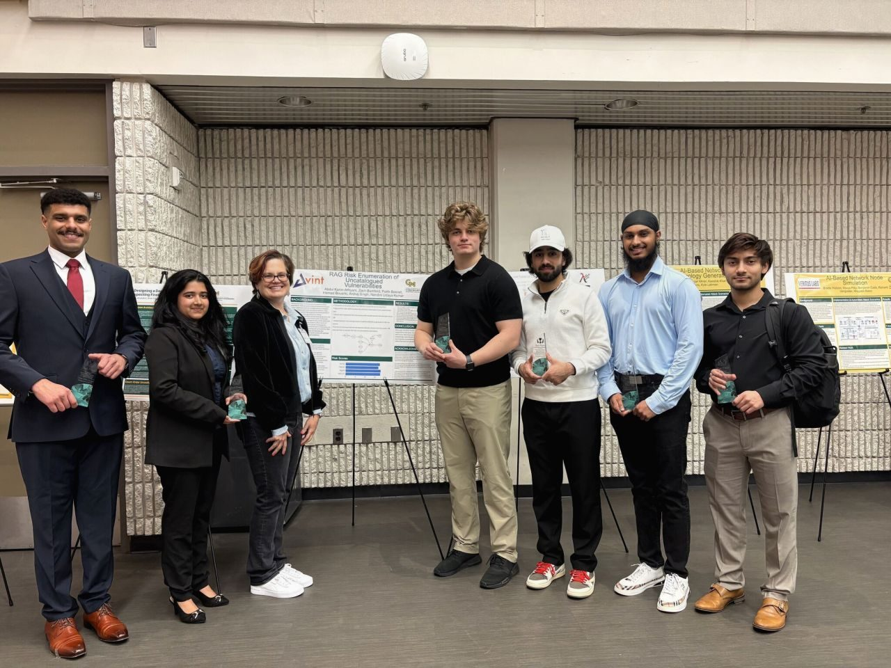
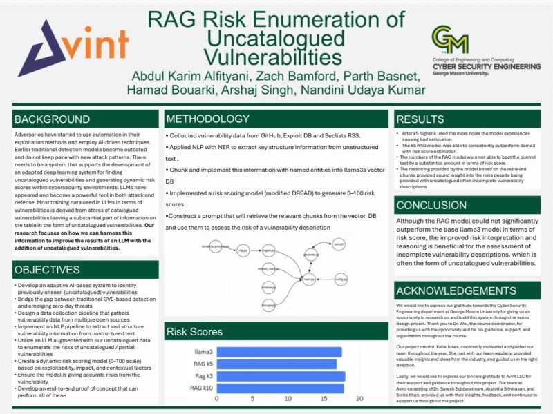
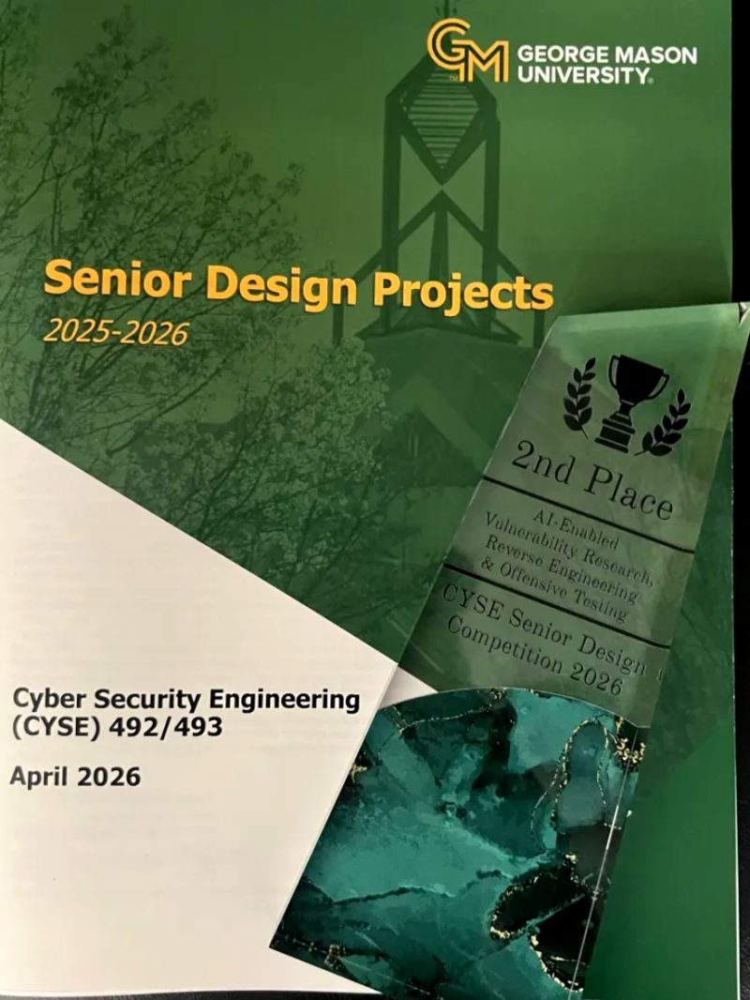

AVINT — RAG Risk Enumeration of Uncatalogued Vulnerabilities
2nd Place · CYSE Senior Design Competition 2026 · AI-Enabled Vulnerability Research, Reverse Engineering & Offensive Testing
The problem
Uncatalogued vulnerabilities don't wait for formal classification. By the time a vulnerability has a CVE number and ends up in a scanner's signature feed, it has typically been discussed in some corner of the internet for days or weeks. The gap between something being discussed and something being scannable is the gap defenders lose in.
Avint LLC sponsored our team to take a swing at closing that gap: can we build a system that surfaces emerging threat discussions earlier than NVD, in a form analysts can actually use?
What we built
A four-stage Retrieval-Augmented Generation pipeline:
- Collection. Open-source ingest from GitHub commits and issues, Exploit-DB drops, and SecLists RSS feeds.
- NLP + NER. Extract structured entities (product, version, attack vector, impact) from messy free-text security writeups.
- Chunk + embed. Split documents and push embeddings into a Llama 3 vector store, preserving named entities as retrieval metadata.
- Scoring. A modified DREAD rubric runs over the retrieved chunks, producing a 0–100 risk score so analysts can sort and triage.

Results
The base Llama 3 model produced comparable numeric scores to our RAG-augmented model on our test set. The win was in the reasoning, not the score — our pipeline could cite the underlying chunks that justified each score, and analysts in the pilot review said the citation trail was where most of the value lived. We pitched it as: "the score is a hint, the retrieval trail is the product."
We also tested retrieval depth (k=3, k=5, k=10) and found that k=5 outperformed both — k=10 made things worse because redundant chunks crowded out signal. This finding made it onto the final poster.
What I would change
- Ground-truth eval. We compared our augmented model against the base model, but didn't have a holdout of vulnerabilities that were eventually catalogued late. That's the eval I want to run with summer time.
- Security-tuned NER. Off-the-shelf NER misses CPE strings, MITRE ATT&CK techniques, and software version ranges. A fine-tuned model would have helped.
- Scope discipline. We tried to add Reddit and Mastodon feeds in March and it almost ate the timeline. Should have cut earlier.
Team and credits
Six undergrads: Abdul Karim Alfityani, Zach Bamford, Parth Basnet, Hamad Bouarki, Arshaj Singh, and me. Course coordinator: Dr. Wei. Mentor on the Avint side: Katie Jones, consistently the person who asked the right "are you sure?" question. Industry advisors from Avint: Dr. Suresh Subbaratinam, Akshitha Srinivasan, and Sonia Khan.
Thanks to George Mason University's Cyber Security Engineering department for the project framework and to Avint LLC for trusting six undergrads with a real research problem.

— Nandini